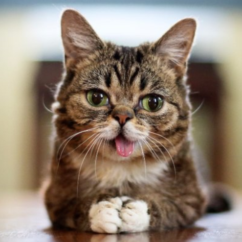
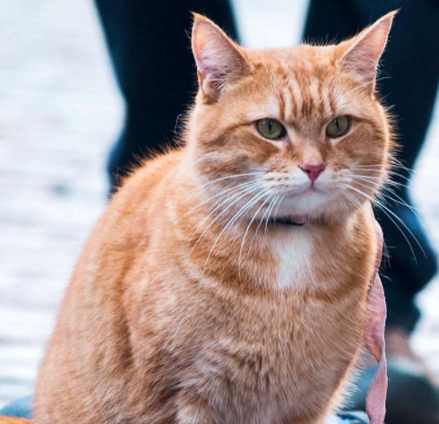
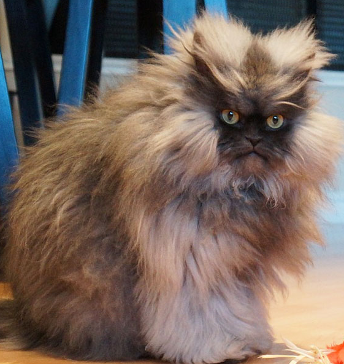
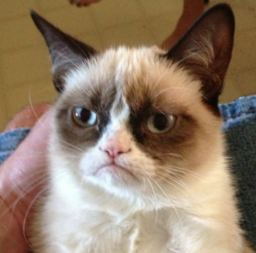
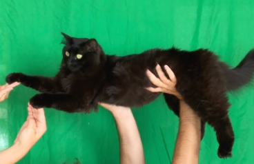
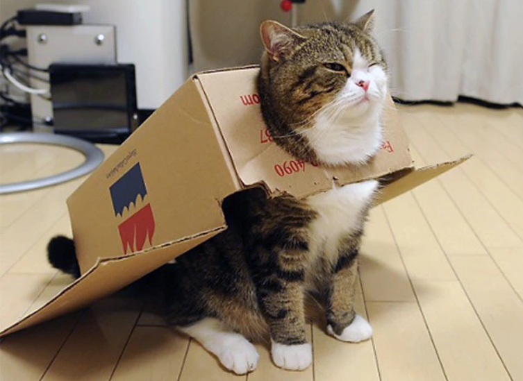

Híres macsakák
Az alábbi weboldalon valamilyen okból híressé vált élő, vagy kitalált macskákkal találkozhatunk. A
történelem
során számos macska vált ismertté, esetenként híres gazdáik, szokatlan tulajdonságaik vagy tetteik révén.
Számos ismert személyről tudjuk, hogy macskabarát volt.
Közéjük tartozik például XII. Piusz pápa, VI. Pál pápa, Richelieu bíboros, Winston Churchill, Ernest
Hemingway, Bohumil Hrabal, Freddie Mercury, II. Miklós cár, H. P. Lovecraft, Ottlik Géza és Weöres Sándor
is.
Egyes ismert személyek pedig megvetették vagy egyenesen gyűlölték ezeket az állatokat, mint például Nagy
Sándor, Julius Caesar, Dzsingisz kán, Bonaparte Napóleon.
Lil Bub
Bob az utcamacska
Grumpy Cat
Owl Kitty
Maru a doboz mester
Meow ezredes
Lil Bub

Lil Bub , hivatalosan Lil BUB (2011. június 21. - 2019. december 1.), amerikai híres macska,
egyedülálló fizikai megjelenéséről ismert. Fotóit először 2011 novemberében tették közzé a
Tumblr -ben, mielőtt levették volna őket, miután megjelentek a Reddit közösségi híroldalon.
A "Lil Bub" a Facebook-on több mint hárommillióan kedveli. Lil Bub szerepelt a Lil Bub &
Friendz című dokumentumfilmben , amely a Tribeca Filmfesztiválon került bemutatásra 2013.
április 18-án, és elnyerte a Tribeca Online Fesztivál legjobb játékfilmjét.
Bob az utcamacska

2007 tavaszán James Bowent egy metadon programra kötelezték, miközben egy támogatott lakhatási
programban élt a londoni Tottenhamben. Egy este hazatért és egy vörös macskát talált az épülete
folyosóján. Feltételezve, hogy egy másik lakóé lehet a cica, egyszerűen visszatért a lakásába.
Amikor a macska másnap még ott volt, Bowen aggódni kezdett, és felfedezte, hogy a macska nem
visel gallért vagy azonosítót, túl vékony volt és nagyon koszos volt a bundája, karcolások
voltak az arcán és 1 elfertőződött seb a lábán. Bowen megkérdezte a házban lakókat, hogy kié
lehet a macska és amikor egyikük sem tartotta igényt az állatra, Bowen úgy döntött, hogy segít a
macskának. A macskát végül Bobnak nevezte el.
Meow ezredes

Meow ezredes (örökbefogadás: 2011. október 11. - 2014. január 29.) amerikai himalájai – perzsa
macska volt, aki ideiglenesen a 2014. évi Guiness-világrekordott tartotta, mint leghosszabb
szőrű macska (kb. 23 cm volt a leghosszabb szál). Internetes híresség lett, amikor tulajdonosai
a Facebookon és az Instagramon arcáról képeket tettek közzé. Követői százezrei likeolták és
elnevezték az ezredest "imádnivaló félelmetes diktátornak" és "a világ legdühösebb macskájának".
Grumpy Cat

Grumpy Cat (ejtsd: grámpi ket, az angol kifejezés jelentése szó szerinti fordításban „Zsémbes
Macska”), eredeti nevén Tardar Sauce (ami a tartar sauce, azaz a „tartármártás” szó elferdített
alakja) (Morristown, Arizona, Amerikai Egyesült Államok, 2012. április 4. – 2019. május 14.) egy
nőstény házi macska és internetes híresség, amely mogorva „arckifejezésével” vált híressé. A
macska pofája mindig lefelé hajlik a szája körül, a rosszkedv látszatát erősíti, hogy fehér és
világosszürke színű szőre fokozatosan sötétbarnává válik mindkét világoskék szeme körül, a
homlokát pedig gyakran úgy tartja, mintha összevonná a szemöldökét.
Owl Kitty

OwlKitty (Lizzy) első bejegyzése 2018 novemberében került fel az Instagram-fiókjára. Harmadik
bejegyzése vírusként kezdett el terjedni, 82 000 megtekintést kapott és még a Bored Panda is
megosztotta a médiaoldalán. Innentől kezdve a videói szenzációvá váltak, és számos híroldalon és
több ezer közösségi médiafiókban is megjelentek. Ami egyszerű videóként kezdődött, évek alatt
teljes filmprodukcióvá fejlődött. A cica gazdái házukban rögtönzött stúdiótermet hoztak létre,
zöld képernyőt állítottak fel, hogy Lizzy mozdulatait beépítsék már meglévő kultikus
filmjelenetekbe/trailerekbe.
Maru a doboz mester

Maru egy japán skót macska, aki népszerűvé vált a YouTube-on. A Marut bemutató videókat több
mint 444 milliószor nézték meg, és egy ideig a Guiness-világrekordot tartotta mint a legtöbbször
megnézett videók (Solo állatoknál). Marut az "internet leghíresebb macskájának" nevezik. Maru
videói mugumogu fióknév alatt vannak. Tulajdonosát ritkán látják a videók közben. A videók angol
és japán szövegeket tartalmaznak, amelyek leírják az eseményeket, és gyakran azt mutatják, hogy
Maru kartondobozokban játszik, "I love a box!" volt az első videója.